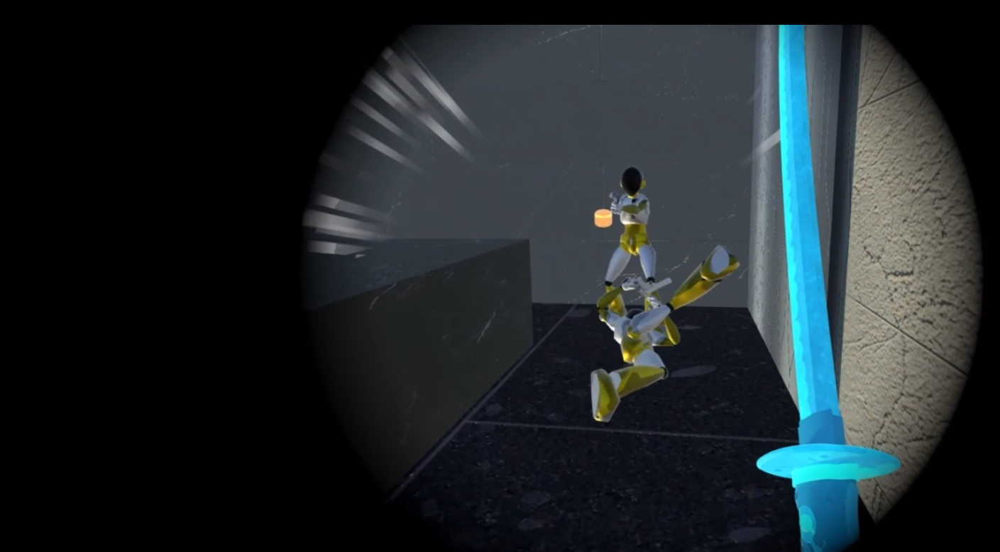
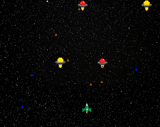
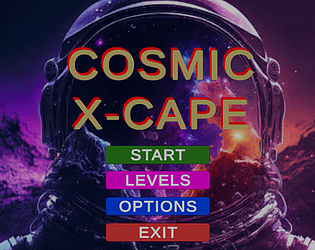
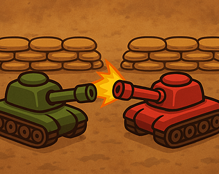
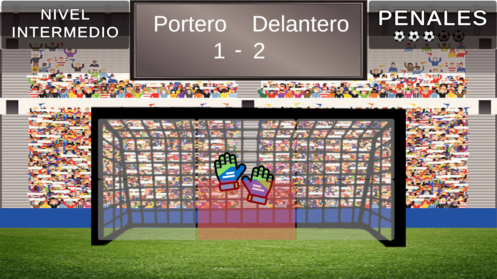
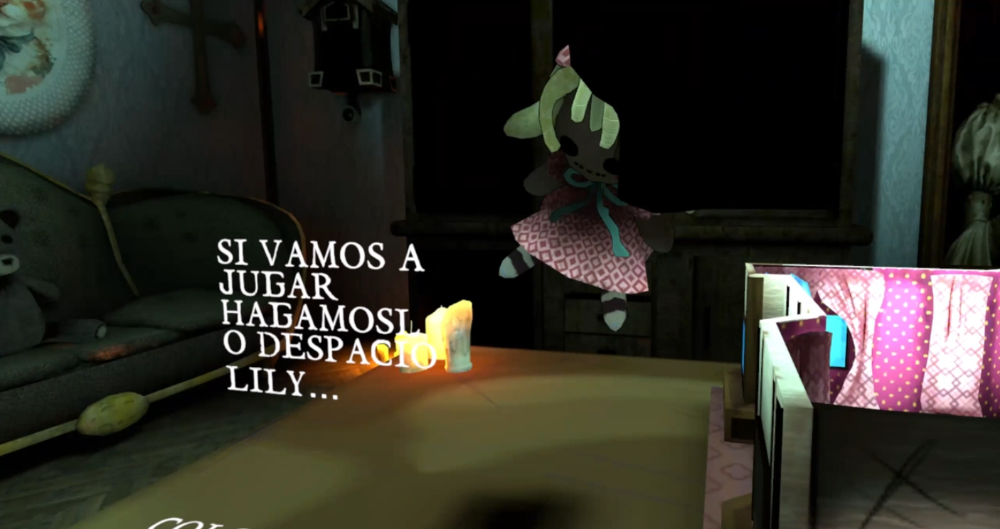
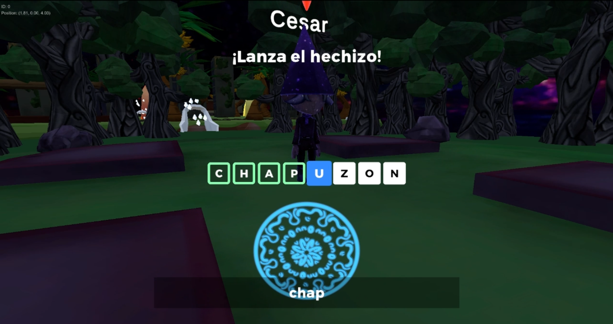

VR / VIDEO_001VR / SURVIVAL
▶Chrono Slayer
Escapa de un edificio infestado de robots hostiles en esta experiencia de realidad virtual.
INSERT COIN — PORTAFOLIO INTERACTIVO
Un vistazo a mundos, mecánicas e historias que han cobrado vida entre píxeles y código.
PRESS START [ ENTER ]PLAYER ONE / DISCOVER
Cada globo esconde un proyecto real. Explota uno para descubrir su mundo y después juega o mira un adelanto.
Toca o haz clic en un globo para revelar un proyecto. ¡Descubre los nueve!
✦ ¡NIVEL COMPLETADO! Descubriste todos los proyectos.
PLAYER ONE / READY?
Explota un globo para descubrir un juego. No necesitas monedas.

GAME_001PLAY ↗Acción arcade inspirada en los clásicos matamarcianos. Oleadas, reflejos y una misión: defender la galaxia.

GAME_002PLAY ↗Defiende la Tierra de una invasión espacial con acción y reflejos rápidos.

GAME_003PLAY ↗Combate local entre tanques donde la estrategia y la precisión deciden al ganador.

GAME_004PLAY ↗Ponte los guantes, mide tus reflejos y demuestra que puedes dominar la portería.
Desarrollado durante mis prácticas en MOST Studio: ayuda a Chilin a dominar el balón.

VR / VIDEO_001Escapa de un edificio infestado de robots hostiles en esta experiencia de realidad virtual.

VR / VIDEO_002Experiencia de realidad virtual presentada en La Mole y desarrollada durante mi etapa universitaria.

VIDEO_003Battle royale de magia con multijugador LAN, duelos dinámicos y combate competitivo.
Lánzale un hueso a tu perro y ayúdalo a atraparlo para sumar puntos.
¿Te gustaría crear un mundo nuevo?
INICIAR PROYECTO ↗VER TAMBIÉN: PROYECTOS WEB →